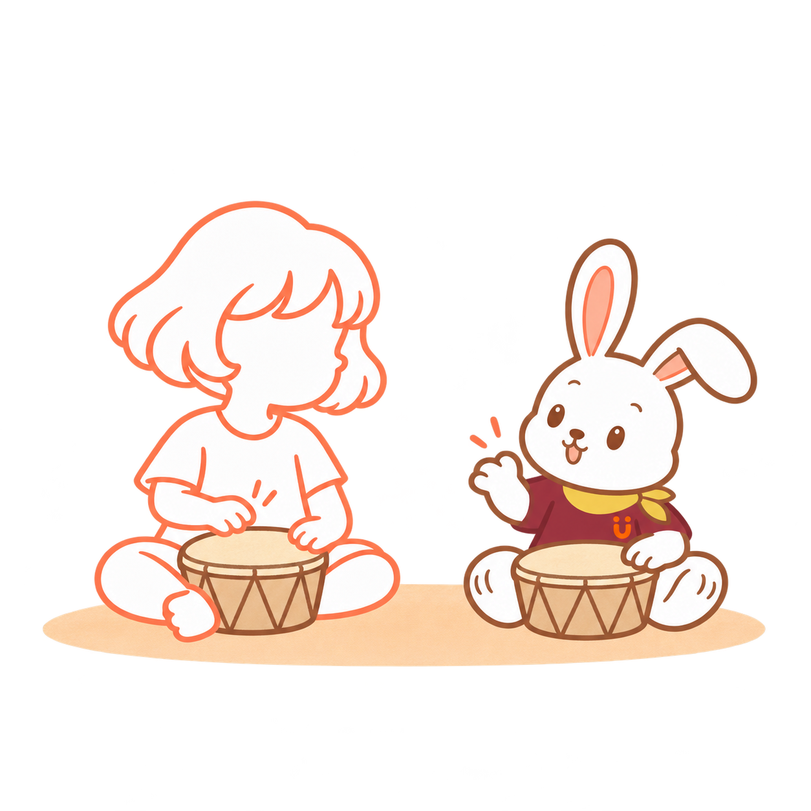

01
きみが、とん。
ちいさな おと。
すこし まって、ぼくも、とん。
きこえた？
02
てと、てで。
ぼくの てを、ここに。
きみの てが……。

たっち！
もういちど、たっち。
03
あしでも、いち、に。
てから、あしへ。
いち、に。いち、に。

ぼくも、となりで。
いち、に。
04
おっと、はやすぎた。
ぼくは、いちに、いちに！
あれ、きみは……。
いーち、にー。
そうか。きみの はやさで。
05
……ぴたっ。
きみが とまった。
ぼくも、とまる。

しーん。
……。
06
こんどは、きみから。
きみの てが、ぱっ！
あ、そっち？

ぼくも、ぱっ！
つぎは、なにを しよう？
おはなしの あとに
きみのリズムで、
遊びが変わる。
音で返事をする。手を合わせる。足踏みする。速さを変える。同じリズムでも、遊び方はいろいろ。Genは子どもの音や動きに応じて、一緒に動いたり、止まったり。気に入ったところだけ、何度でも。
この遊びのねらい
- やりとり：自分の音や動きに、相手が応じる楽しさ。
- 手を使う：触れる、鳴らす、離す。慣れたら両手や左右の手でも。
- 動く・止まる：姿勢を変えたり、一瞬その形で止まったりする経験。
左右交互にたたくこと、音に合わせて止まることは、最初からの条件ではありません。
準備と、遊びを変える目安
止まる遊びのコツ：まずは子どもが止まった瞬間に大人も止まるところから。慣れたら短い歌や音の切れ目で一緒に止まってみます。座って手だけ動かしても遊べます。
倒れにくい低い手遊び用のたいこなどを使い、小さな音から。大きな音や突然の音が苦手なら、音を出さず動きをまねる遊びでも構いません。
立って遊ぶときは、平らで滑りにくい床で、周りに十分な空間を。長く止まり続けたり、同じ形を無理に作ったりする必要はありません。疲れや不快な様子があれば休みます。
身体の支え方や運動に制限がある場合は担当の専門職と相談してください。遊びのねらいは、発達の効果や達成を約束するものではありません。
参考：NHS · Gross Motor Skills
バランス・両側の協調の観点を参考にしたHugMapの遊び案です。